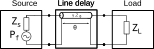
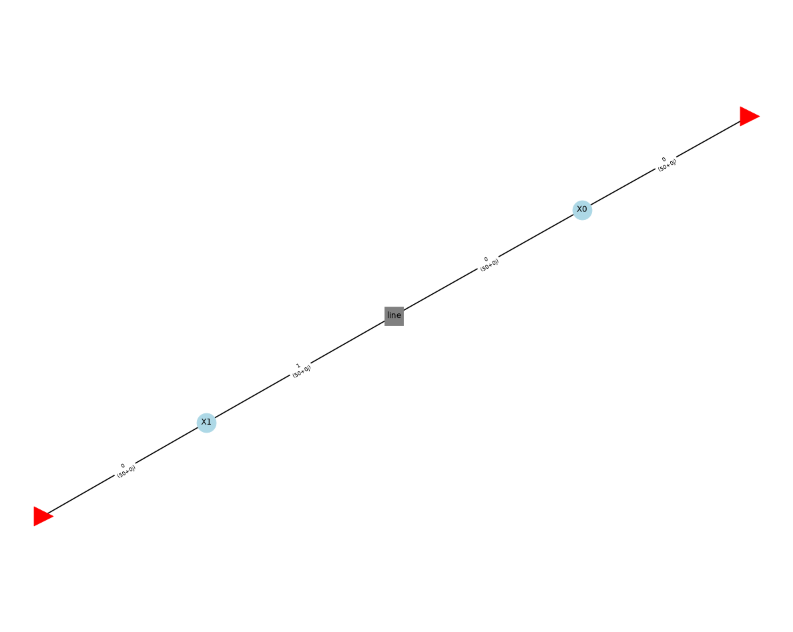
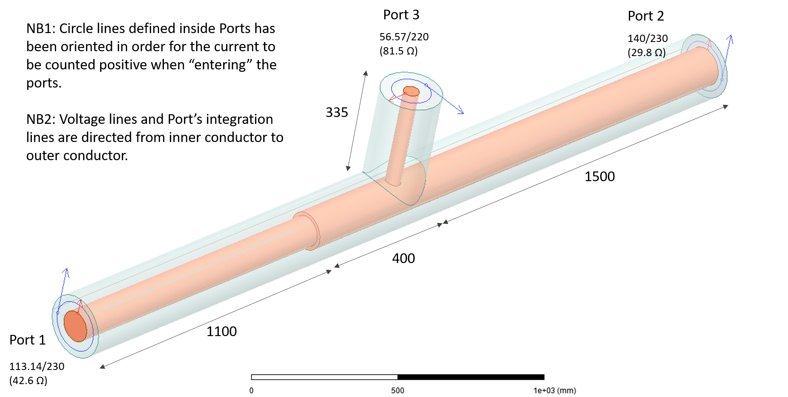
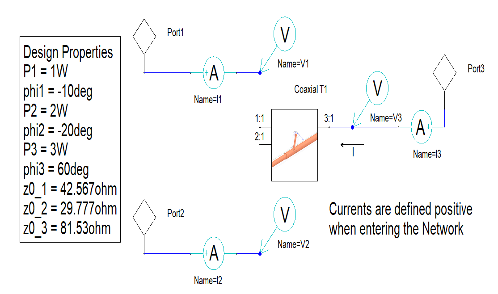
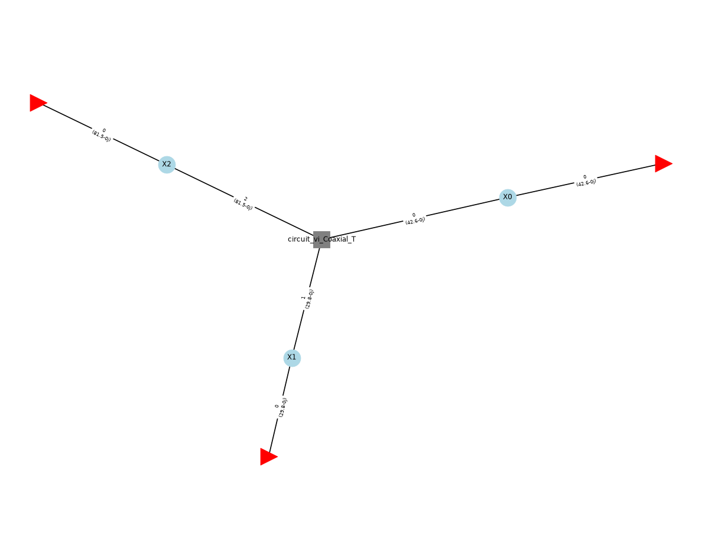
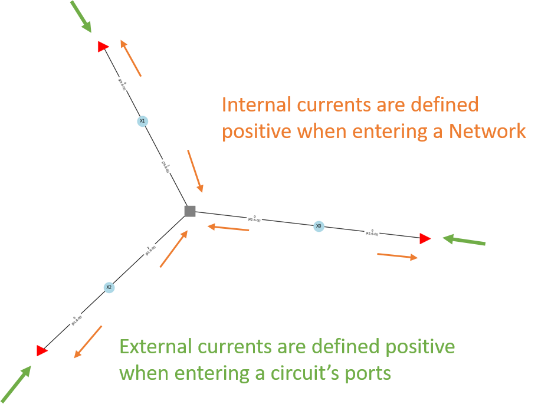

Voltages and Currents in Circuits#
The scikit-rf Circuit object allows one to deduce the voltages and currents at all the intersections of the circuit for a given power (and phase) excitation at circuit’s ports. Here, few examples are examined, in order to clarify the conventions used for current directions.
[1]:
%matplotlib inline
[2]:
# standard imports
import numpy as np
import skrf as rf
from skrf.circuit import Circuit
[3]:
A simple transmission line#
To start, let’s assume a simple transmission line excited by a generator. Let’s assume the generator is matched to the line (\(Z_s=Z_0\)) and the line connected to a matched load (\(Z_0=Z_L\)), all 50 Ohm.

What is the RF currents and voltages at the input and output of this line for a given input power (and phase)?
[4]:
P_f = 1 # forward power in Watt
Z = 50 # source internal impedance, line characteristic impedance and load impedance
L = 10 # line length in [m]
freq = rf.Frequency(2, 2, 1, unit='GHz')
line_media = rf.media.DefinedGammaZ0(freq, z0=Z) # lossless line medium
line = line_media.line(d=L, unit='m', name='line') # transmission line Network
Assuming the source generates an input power of \(P_f\) with a phase \(\phi\), with such a line the voltage and current at the entrance of the line are:
[5]:
Input voltage and current: 10.0 V and 0.2 A
The voltage and current evolve along the transmission line. The voltage and current at the output of the line can be calculated using the transmission line tools provided with scikit-rf:
[6]:
theta = rf.tlineFunctions.theta(line_media.gamma, freq.f, L) # electrical length
V_out, I_out = rf.tlineFunctions.voltage_current_propagation(V_in, I_in, Z, theta)
print(f'Output voltage and current: {V_out} V and {I_out} A')
Output voltage and current: [-8.39071529+5.44021111j] V and [-0.16781431+0.10880422j] A
Let’s perform the same calculation using Circuit. First, one needs to define the circuit, that is to create input/output ports and to connect these ports to the transmission line Network we’ve already created. Then, we can build the circuit:
[7]:
It’s always a good practice to check if the circuit’s graph is as expected. In this case, the graph is pretty simple: 2 ports connected to a 2-ports Network.
[8]:
crt.plot_graph(network_labels=True, edge_labels=True, inter_labels=True)

Circuit provides two methods to determine voltages and currents at the circuit input/output ports (also known as “external ports”). These methods take as input the power and phase inputs at each ports:
[9]:
power = [1, 0] # 1 Watt at port1 and 0 at port2
phase = [0, 0] # 0 radians
[10]:
V_at_ports = crt.voltages_external(power, phase)
print(V_at_ports)
[[10. +0.j -8.39071529+5.44021111j]]
[11]:
I_at_ports = crt.currents_external(power, phase)
print(I_at_ports)
[[0.2 +0.j 0.16781431-0.10880422j]]
The results are similar to the previous, except the sign of the current at port2 which is reversed.
This is normal, as the currents_external() method defines the positive direction of a current as the direction which “enters” into the circuit. More details about this convention at the bottom of this example.
A coaxial T with different characteristic impedances#
As a more advanced example, we’ve built in a full-wave software (here ANSYS HFSS, but other are fine too) the following structure: a coaxial T, defined with different coaxial cross-sections (and such different characteristic impedances).

All the three ports are excited with different power and phase to complicate a bit, as the following:
port |
power [W] |
phase [deg] |
|---|---|---|
#1 |
1 |
-10 |
#2 |
2 |
-20 |
#3 |
3 |
+60 |
Full-wave reference solution#
The voltages and currents are evaluated in the full-wave software directly. Voltage is obtained by integrating the E fields along a straight line going from the inner to the outer conductors in the port’s cross-sections. Current is obtained by integrating the H fields along a circle enclosing the inner conductor in port’s cross-sections. Note the circles are directed in order to define the positive current direction as the direction inward the ports (right-hand rule).
The full-wave solutions are given here for reference, at 3 frequencies:
[12]:
import pandas as pd # convenient to read .csv files
pd.read_csv('circuit_vi_HFSS_Voltages.csv')
[12]:
| Phase [deg] | Freq [MHz] | mag(V1) [V] | mag(V2) [V] | mag(V3) [V] | ang_deg(V1) [deg] | ang_deg(V2) [deg] | ang_deg(V3) [deg] | |
|---|---|---|---|---|---|---|---|---|
| 0 | 0 | 10 | 19.333738 | 20.846031 | 15.272200 | -10.650177 | -9.289474 | -9.877413 |
| 1 | 0 | 50 | 7.495888 | 12.520379 | 14.048313 | -29.855289 | -44.233339 | 168.419884 |
| 2 | 0 | 100 | 13.378541 | 9.825921 | 41.581058 | -38.869964 | -35.275652 | 102.383086 |
[13]:
pd.read_csv('circuit_vi_HFSS_Currents.csv')
[13]:
| Phase [deg] | Freq [MHz] | mag(I1) [A] | mag(I2) [A] | mag(I3) [A] | ang_deg(I1) [deg] | ang_deg(I2) [deg] | ang_deg(I3) [deg] | |
|---|---|---|---|---|---|---|---|---|
| 0 | 0 | 10 | 0.021591 | 0.137606 | 0.512142 | 156.244427 | -90.890034 | 80.224971 |
| 1 | 0 | 50 | 0.275976 | 0.389991 | 0.622469 | 2.596668 | 6.317826 | 44.672585 |
| 2 | 0 | 100 | 0.220526 | 0.424061 | 0.384085 | 33.833593 | -8.087971 | -4.331087 |
In a Circuit simulator#
The voltages and currents can also be derived using a Circuit simulator, like for example:

(where, again, the current probes are oriented in such a way that the current is positive when flowing in the Network). This gives essentially the same results:
[14]:
pd.read_csv('circuit_vi_Designer_Voltages.csv')
[14]:
| Freq [MHz] | mag(V(V1)) [V] | mag(V(V2)) [V] | mag(V(V3)) [V] | ang_deg(V(V1)) [deg] | ang_deg(V(V2)) [deg] | ang_deg(V(V3)) [deg] | |
|---|---|---|---|---|---|---|---|
| 0 | 10 | 19.342985 | 20.849054 | 15.290036 | -10.644150 | -9.283262 | -9.870625 |
| 1 | 50 | 7.499412 | 12.522681 | 14.064961 | -29.854300 | -44.230084 | 168.423657 |
| 2 | 100 | 13.385809 | 9.828158 | 41.631139 | -38.866437 | -35.272131 | 102.384693 |
[15]:
pd.read_csv('circuit_vi_Designer_Currents.csv')
[15]:
| Freq [MHz] | mag(I(I1)) [A] | mag(I(I2)) [A] | mag(I(I3)) [A] | ang_deg(I(I1)) [deg] | ang_deg(I(I2)) [deg] | ang_deg(I(I3)) [deg] | |
|---|---|---|---|---|---|---|---|
| 0 | 10 | 0.021481 | 0.137779 | 0.509421 | 156.253941 | -90.892977 | 80.229605 |
| 1 | 50 | 0.274448 | 0.389875 | 0.619155 | 2.599727 | 6.286661 | 44.674195 |
| 2 | 100 | 0.219239 | 0.423718 | 0.381925 | 33.836727 | -8.152957 | -4.333328 |
With Circuit#
Now let’s build the same circuit with scikit-rf Circuit:
[16]:
# Importing the 3-port .s3p file exported from full-wave simulation
coaxial_T = rf.Network('circuit_vi_Coaxial_T.s3p')
# pay attention to the port's characteristic impedance
# it should match the Network characteristic impedances otherwise this will generate mismatches
port1 = Circuit.Port(coaxial_T.frequency, 'port1', coaxial_T.z0[:,0])
port2 = Circuit.Port(coaxial_T.frequency, 'port2', coaxial_T.z0[:,1])
port3 = Circuit.Port(coaxial_T.frequency, 'port3', coaxial_T.z0[:,2])
# connection list
cnx = [
[(port1, 0), (coaxial_T, 0)],
[(port2, 0), (coaxial_T, 1)],
[(port3, 0), (coaxial_T, 2)]
]
# building the circuit
crt = Circuit(cnx)
[17]:
# let's check if our connection list is correctly defined
crt.plot_graph(network_labels=True, edge_labels=True, inter_labels=True)

The voltages and currents at the ports for the given excitation is:
[18]:
power = [1, 2, 3] # input power in watts at ports 1, 2 and 3
phase = np.deg2rad([-10, -20, +60]) # input phase in rad at ports 1, 2 and 3
voltages = crt.voltages_external(power, phase)
currents = crt.currents_external(power, phase)
[19]:
# just for a better rendering in the notebook
pd.concat([
pd.DataFrame(np.abs(voltages), columns=['mag V1', 'mag V2', 'mag V3'], index=crt.frequency.f/1e6),
pd.DataFrame(np.angle(voltages, deg=True), columns=['Phase V1', 'Phase V2', 'Phase V3'], index=crt.frequency.f/1e6)
], axis=1)
[19]:
| mag V1 | mag V2 | mag V3 | Phase V1 | Phase V2 | Phase V3 | |
|---|---|---|---|---|---|---|
| 10.0 | 19.342535 | 20.848763 | 15.289548 | -10.650167 | -9.289472 | -9.877400 |
| 50.0 | 7.499300 | 12.522020 | 14.064485 | -29.855280 | -44.233336 | 168.419396 |
| 100.0 | 13.384629 | 9.827209 | 41.628636 | -38.869951 | -35.275642 | 102.382983 |
[20]:
# just for a better rendering in the notebook
pd.concat([
pd.DataFrame(np.abs(currents), columns=['mag I1', 'mag I2', 'mag I3'], index=crt.frequency.f/1e6),
pd.DataFrame(np.angle(currents, deg=True), columns=['Phase I1', 'Phase I2', 'Phase I3'], index=crt.frequency.f/1e6)
], axis=1)
[20]:
| mag I1 | mag I2 | mag I3 | Phase I1 | Phase I2 | Phase I3 | |
|---|---|---|---|---|---|---|
| 10.0 | 0.021471 | 0.137796 | 0.509429 | 156.241420 | -90.898041 | 80.225072 |
| 50.0 | 0.274422 | 0.389839 | 0.619125 | 2.597008 | 6.284260 | 44.671994 |
| 100.0 | 0.219233 | 0.423683 | 0.381901 | 33.834350 | -8.154641 | -4.333857 |
These results matches well the one given by the full-wave calculations, hourra.
external vs internal ports?#
You have maybe noticed in the Circuit documentation that we often talk about “internal” or “inner” ports, and of “external” or “outer” ports. The external ports corresponds to the Circuit.Port() Networks defined when building a Circuit. The internal ports are all the other connexions inside the Circuit
The Circuit algorithm allows one to have access to the voltages and current at the internal connexions inside the circuit. In the previous examples, there is not too much internal ports as we’ve connected a N-port directly to external ports. However, in more complex usages we can have a lot (look to the other Circuit examples).
In Circuit, voltages and currents are peak values. While voltages are defined in a non-ambiguous manner, positive currents can be defined in a way or another, leading to a 180 degree ambiguity. To solve this, we have chosen the following definition: internal currents are defined such as they are measured positive when flowing into Networks.
Hence, you find that “external” current are sign opposite of “internal” ones at the corresponding ports, because the internal currents are actually flowing into the ports Networks.
[21]:
# internals currents (currents at all connexions)
# in this example, there are 6 internal connexions (3 pairs of connexions)
crt.currents(power, phase)
[21]:
array([[ 0.0196517 -0.00865047j, -0.0196517 +0.00865047j,
0.00215969+0.13777892j, -0.00215969-0.13777892j,
-0.08649001-0.50203344j, 0.08649001+0.50203344j],
[-0.27414049-0.0124343j , 0.27414049+0.0124343j ,
-0.38749668-0.04267229j, 0.38749668+0.04267229j,
-0.44028632-0.43527388j, 0.44028632+0.43527388j],
[-0.18210634-0.12206774j, 0.18210634+0.12206774j,
-0.41939939+0.0600975j , 0.41939939-0.0600975j ,
-0.38080855+0.02885945j, 0.38080855-0.02885945j]])
[22]:
# This gives the indices of the "external" ports
crt.port_indexes
[22]:
[0, 2, 4]
[23]:
# So we can keep only "external" ports
crt.currents(power, phase)[:, crt.port_indexes]
[23]:
array([[ 0.0196517 -0.00865047j, 0.00215969+0.13777892j,
-0.08649001-0.50203344j],
[-0.27414049-0.0124343j , -0.38749668-0.04267229j,
-0.44028632-0.43527388j],
[-0.18210634-0.12206774j, -0.41939939+0.0600975j ,
-0.38080855+0.02885945j]])
[24]:
# note the sign difference due to the convention chosen for internal ports
crt.currents_external(power, phase)
[24]:
array([[-0.0196517 +0.00865047j, -0.00215969-0.13777892j,
0.08649001+0.50203344j],
[ 0.27414049+0.0124343j , 0.38749668+0.04267229j,
0.44028632+0.43527388j],
[ 0.18210634+0.12206774j, 0.41939939-0.0600975j ,
0.38080855-0.02885945j]])
The figure below illustrates these differences using the previous example:

Voltages and Currents in complex Circuits#
power-waves and traveling-waves#
In scikit-rf, the calculation of Voltages and Currents relies on the Scattering Parameters (S-parameters) of the Circuit. The default definition of S-parameters uses power-waves, expressed as:
where \(b_i\) and \(a_j\) represent the output and input power waves at ports i and j in a given Network, respectively.
As an example, the methods Circuit._b() and Circuit._a() provide support for calculating these output and input power waves, although this is often unnecessary for typical use cases.
[25]:
From the S-parameters definition, we can determine the forward (input) traveling wave \(V^+_i\) and the backward (output) traveling wave \(V^-_j\) at ports i and j in a given Network as:
Here, \({Z_0}_i\) and \({Z_0}_j\) are the characteristic impedances at port i and j, respectively.
Voltage and Traveling waves#
In transmission line theory, the total voltage and total current are functions of the incident and reflected voltage wave amplitudes. Similarly, the Voltage and Current at each node in a Circuit can be calculated using the forward (input) and backward (output) traveling wave at the components’ ports that form the node.
For simple series connections, such as when port m of Network \(A\) is connected to port n of Network \(B\), the total Voltage at the node can be calculated using the same principles as for transmission lines:
Here, the \(V_m^-\) and \(V_n^-\) are the backward (output) traveling waves at ports m and n, respectively.
Voltage under impedance mismatch#
When the port characteristic impedances of Network \(A\)’s port m (\({Z_0}_{Am}\)) and Network \(B\)’s port n (\({Z_0}_{Bn}\)) are different, impedance mismatch occurs. This requires the use of the transmission coefficient \(\Tau_{nm}\) to correct the mismatch.
When a voltage wave is transmitted from Network \(A\)’ port m to Network \(B\)’s port n, Network \(A\) can be treated as the source and Network \(B\) as the load. The transmission coefficient \(\Tau_{nm}\) from m to n can then be used to adjust for the mismatch:
Complex Circuits with Parallel Connections#
In more complex Circuits, such as those with parallel connections, multiple ports may converge at a node, each potentially having a different characteristic impedance. Despite the added complexity, the approach of using the transmission coefficient \(\Tau\) remains effective.
By selecting one Network’s characteristic impedance \(Z_l\) as the source impedance and treating the combined characteristic impedance of the other \(k\) parallel Networks as the load impedance, the actual transmission coefficient for port l can be determined:
This approach allows for the calculation of the effective impedance at the node, which can then be used to adjust for impedance mismatches and ensure accurate Voltage and Current calculations in complex parallel Networks configurations.
Example#
The Wilkinson Power Divider provides an example of voltage and current calculations in complex circuits. It demonstrates the calculation for both purely series-connected Circuit using splitters and more complex Circuit that involve component parallelization, yielding consistent results in both scenarios.
[ ]: